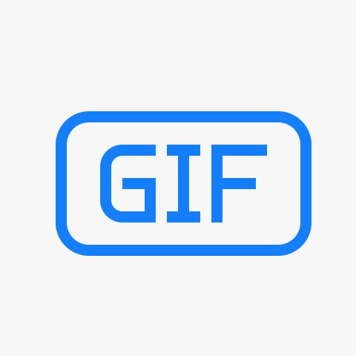
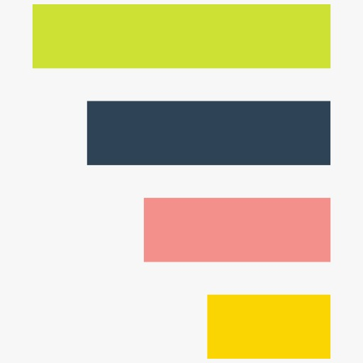
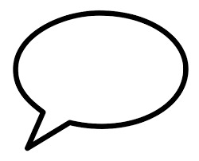
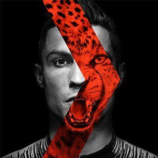
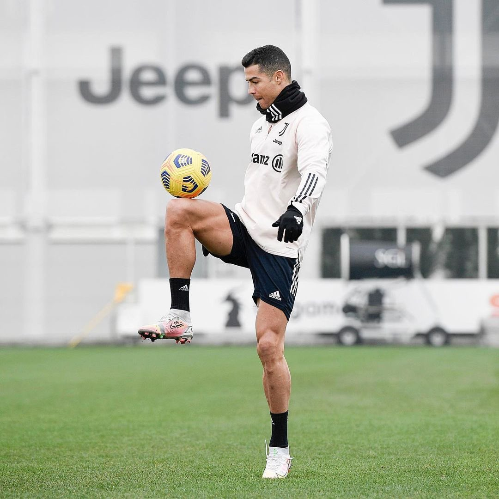
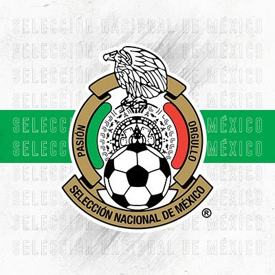

Home
What's happening?


Tweet

Leo Messi
@leomessiok - 5min
Achieving the record of 644 goals for the same club made me very happy, but the most
important thing is being able to give something back to all the kids fighting for their health.
We hope April’s auction serves to really raise awareness aboutthis great cause.@adidasfootball


Cristiano Ronaldo
@Cristiano - 10min
Tomorrow we have a very importante game against a very strong team and I can only hope that
it may be the beggining of the long walk we want to take until the final. Respect for the opponent,
ambition for the victory and 100% focus on our goals. Let’s go, guys! Fino Alla Fine!


Selección Nacional
@miseleccionmx - 20min
45 minutos de acción para @jesustecatitoc en la victoria del @FCPorto 0-2
sobre Gil Vicente en duelo de liga.
sobre Gil Vicente en duelo de liga.